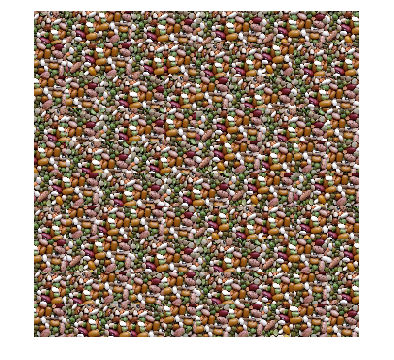
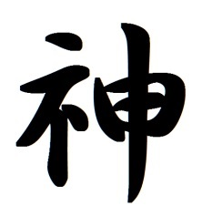
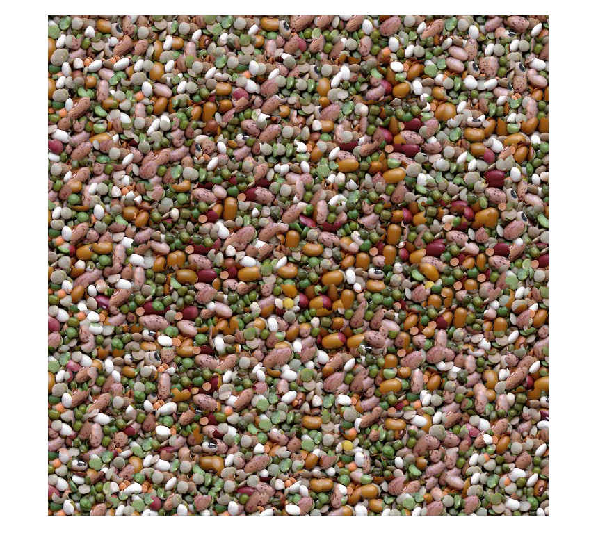
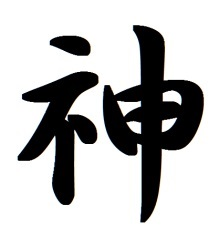
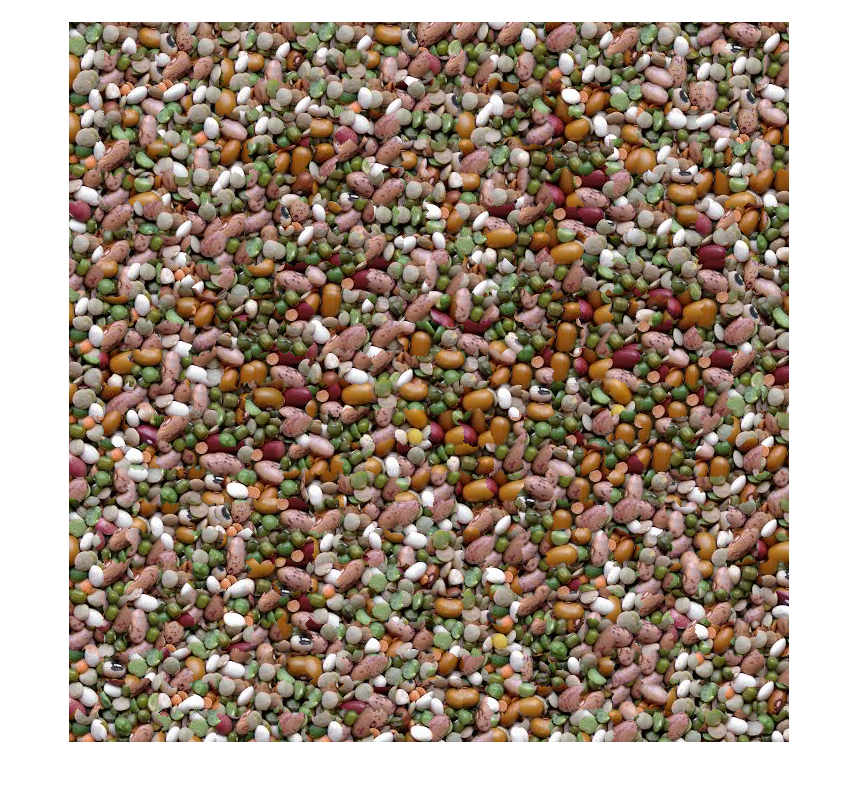

Figure 1 caustics

Figure 2 FarmAerial

Figure 3 Leafs

Figure 4 Beans
Figure 5 Blocks

Figure 6 Rocks
Result for texture transfer: to make it look good, it will be trick to pick up the texture and the cooresponding map
Figure 7 Faces 1
Figure 8 Faces 2

Figure 9 human

Figure 10 Chinese Charater "god"

Figure 11 Chinese Charater "god"
Figure 7 Faces 1
Figure 8 Faces 2
Figure 9 human

Figure 10 Chinese Charater "god"

Figure 11 Chinese Charater "god"